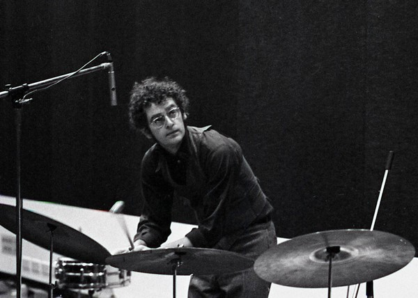
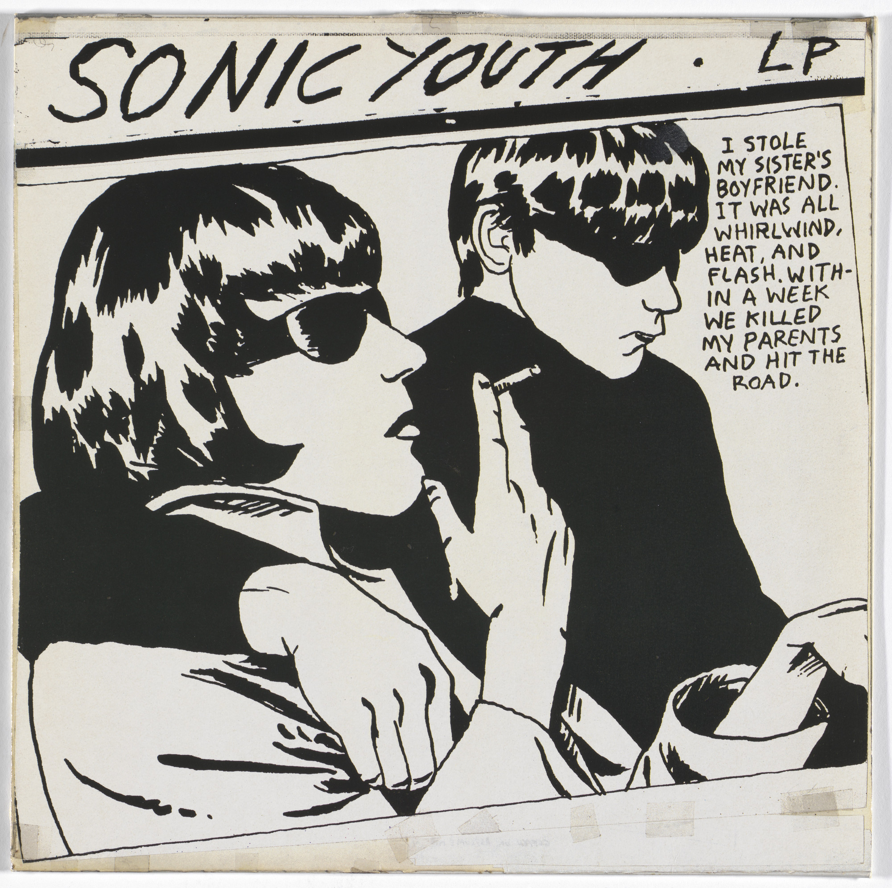
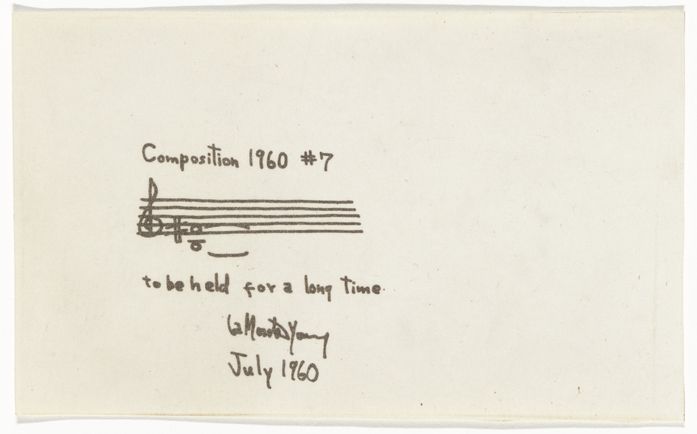

Walter De Maria bridged multiple movements of artistic practice that blossomed in the 1960s creating interactive sculptural installations and providing conceptual underpinnings to larger-scale sculptural work. In later projects he also connected viewers to nature by either embedding visual elements in nature itself, or by bringing components of nature inside gallery spaces.
His most ambitious works were not only physically large-scale but also extreme in terms of exhibition duration - some lasting decades, whether indoors or out, conversely some were exceptionally ephemeral because they were exposed to the elements.
His active participation in non-visual musical performances were similarly minimalist and large-scale and helped lay the foundations for later generations of musical performers using those characteristics.
As an early proponent of Minimalism, De Maria invested heavily in unusually stripped down, fundamental visual forms including everything from simple, yet bold lines to other abstract geometric shapes - channeling his study of the Eastern philosophical emphasis on simplicity.
Perhaps most significantly, he developed a conceptual approach to earth-based works that both used the landscape as immersive "canvas" in what were exceptionally large-scale projects for his time, and also brought aspects of nature inside to force attention on the viewers' relationship to it in insistent ways that transcended previous representations by other artists.
He was also influential on generations of the musical avant-garde, drawing on his studies in jazz and leanings toward a stripped down aesthetic to perform and develop intensely minimalist and conceptualist approaches to making sound which influenced composers and performers from La Monte Young to Sonic Youth.


